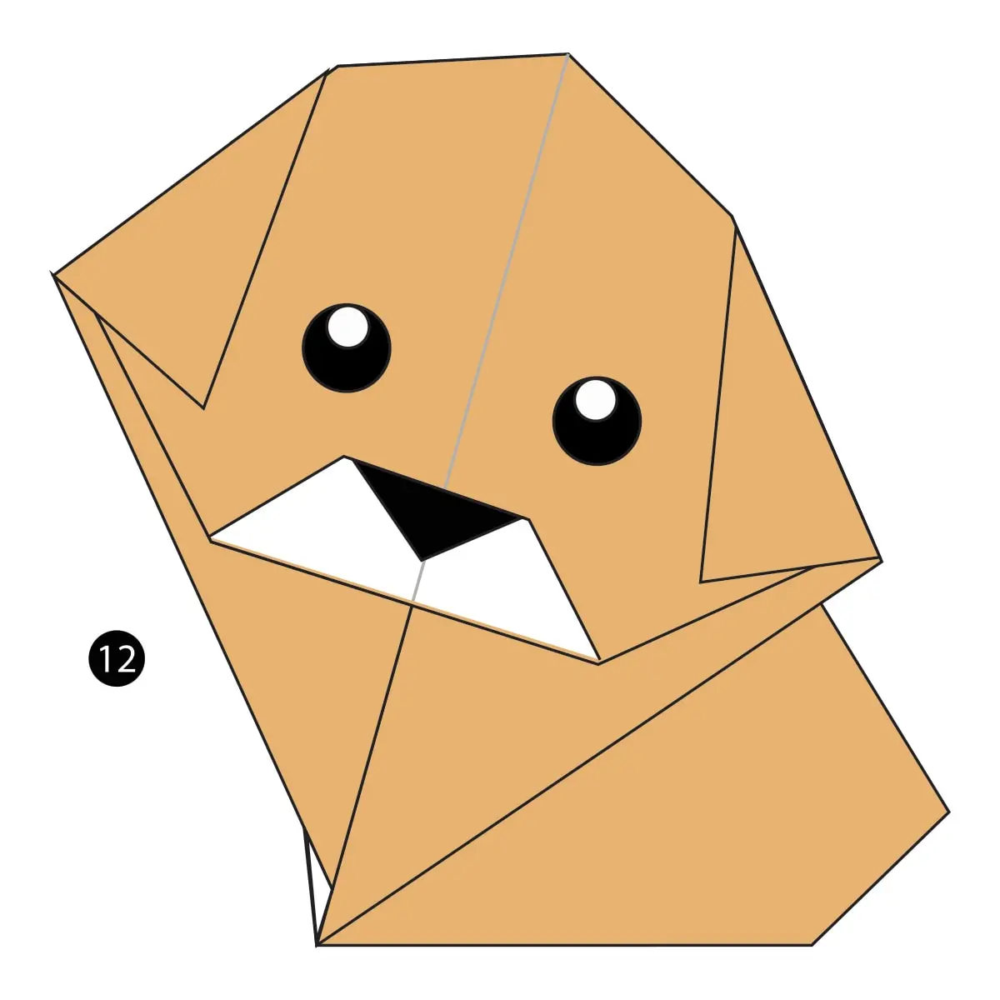

Origami Desings
About Us
Follow Us
Press on the Origami to see how it is made!!!!

Intresting facts about Camel
- Camel's ears are furry
- Camel's can move easily because of it's specially desinged feet
- When they find Water they drink as much as possible

Intresting facts about Chameleon
- Chameleons are Reptiles that are the part of iguana suborder
- Changing skin color is an important part of communication among Chameleon
- Most chameleons have a prehensile tail that they use to wrap around tree branches

Intresting facts about Pegion
- Pegions are incrediblely Complex and Intelligent animals
- Pegions are reowned for their outstanding navigation system
- Pegions have exellent hearing abilities

Intresting facts about Teddy Bears
- The Teddy Bear's pinic song was originally called the Teddy Bear Two step
- Wnnie the Pooh was based on a real Bear
- The smallest commercially available stitched teddy bear is a mere 0.29 inches tall, made by South African “microbear”
maker Cheryl Moss, whose largest creations are just taller than half an inch

Intresting facts about Panda
- Gaint Pandas are good at climbing trees and also can swim
- Pandas go from pink to white and black (or brown)
- Pandas are "lazy" - eating and sleeping make their day

Intresting facts about Cicada
- All cicada species in North America came from a common ancestor
- cicada species switches from being on a 13-year cycle to a 17-year cycle

Intresting facts about Dogs
- Puppies are born blind and deaf
- Puppies spend 15-20 hours a day sleeping
- Puppies become 'adult' when they turn one